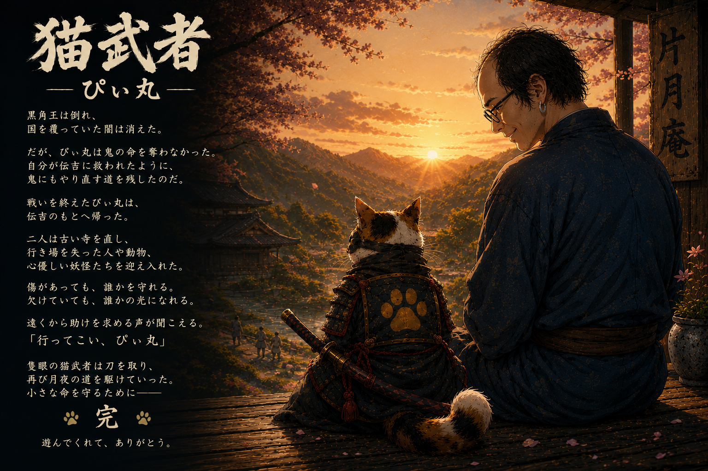

これは、捨てられた一匹の猫が、
武者となるまでの物語。
生まれてすぐに目を病み、
冷たい雨の中に捨てられていた三毛猫。
その小さな命を拾ったのは、
若くして薄毛に悩み、人目を避けて暮らす
心優しき青年だった。
互いの傷を支えながら、
一人と一匹は、かけがえのない家族となる。
やがて三毛猫は刀を取り、
人々を苦しめる妖怪や鬼に立ち向かう。
世界を救うためではない。
かつての自分と同じように、
誰かに見つけてもらうことを待つ命を
守るために――。
隻眼の猫武者、その旅が今始まる。
SENGOKU SURVIVAL ACTION
猫武者
隻眼の猫武者となり、戦国の夜を生き抜け。
所持金 0両
NEKO ARMORY
0両
武器屋
戦で得た両を使い、次の出陣に備える。
BATTLE RECORD
猫武者 戦績札
NEKO MUSHA ARCHIVE
猫武者図鑑
LEVEL UP
秘宝を選択
RESULT
夜明けまで届かず

PAUSED